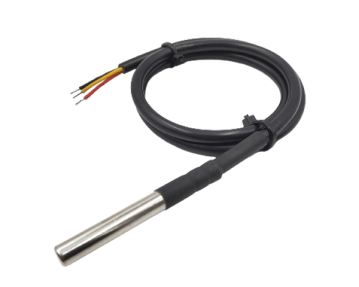
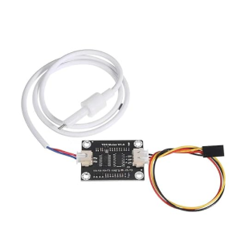
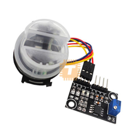
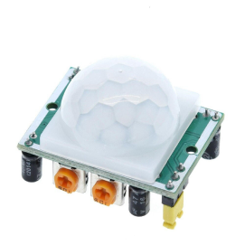
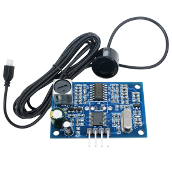

Overall water status
—
Waiting for live measurements and configured thresholds.
An ESP32-based IoT system designed to monitor water conditions, estimate water depth and detect unauthorized movement around monitored or restricted areas.
The Smart Water Safety Detector by Group WD-73 is an IoT-based device built around the ESP32. It combines specialized sensors to monitor key water-quality parameters, measure water depth and identify unauthorized movement in restricted or potentially dangerous areas.

Waterproof temperature probe for aquatic temperature monitoring.

Turbidity sensor for water clarity and suspended-particle detection.

TDS sensor for dissolved-solids measurement and water-quality indication.

PIR sensor for movement detection and security alerts.

Waterproof ultrasonic distance sensor for depth or water-level estimation.
IT26102196 - U. G. A. Y. Ranvida
IT26102180 - T. N. Karunarathne
IT26102197 - K. D. E. G. Amarasena
IT26102190 - W. S. N. Thamel
IT26102182 - K. Kajeevan